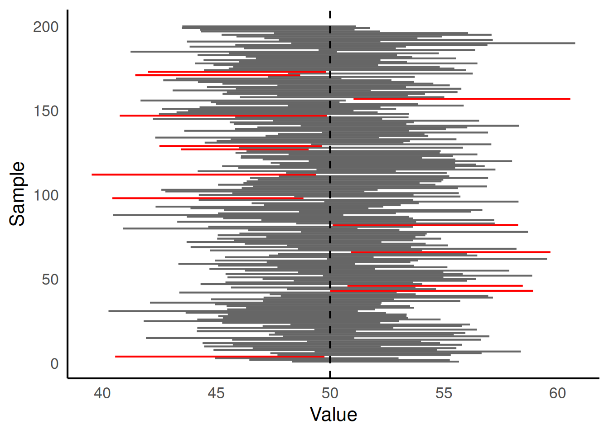

In the first hour you built a confidence interval from the ground up: you saw where the SD came from, computed the SE from it, and used the SE to construct the interval. This hour, you will interrogate the mechanism by simulation. You will confirm the \(\sqrt{n}\) relationship, watch what the 95% coverage claim actually looks like across many intervals, and settle what the interval does and does not mean.
Simulate the sampling distribution
We begin by confirming something you saw on the board in Session 1: when you draw repeated samples from a population and compute the mean each time, the resulting distribution has a characteristic shape.
The code below draws 10,000 samples of size 20 from a population with mean 50 and standard deviation 10, and plots the distribution of sample means.
Task: predict the shape
Before you run the code, write down your prediction. What shape will the histogram of sample means have? Will it be centred on 50, or somewhere else?
Figure 1: Sampling distribution of the mean for 10,000 samples of size 20.
Task: check your prediction
Was the histogram centred where you expected? What shape does it have?
The histogram is centred on 50 (the population mean) and is approximately bell-shaped — a normal distribution. This holds even though each individual value comes from a normal population, and it would also hold for many non-normal populations provided the sample size is large enough.
This result is the Central Limit Theorem (CLT): the sampling distribution of the mean tends towards a normal distribution as the sample size increases, regardless of the shape of the individual data. Because the sampling distribution is approximately normal, we can use the normal distribution to build the confidence interval formula.
Build a confidence interval
A 95% confidence interval for the mean is:
\[
\bar{x} \pm 1.96 \times \text{SE}
\]
The code below draws a single sample of size 20 from the same population and computes its 95% confidence interval.
n <-20one_sample <-rnorm(n, mean = pop_mean, sd = pop_sd)sample_mean <-mean(one_sample)sample_se <-sd(one_sample) /sqrt(n)lower <- sample_mean -1.96* sample_seupper <- sample_mean +1.96* sample_sec(lower = lower, mean = sample_mean, upper = upper)
lower mean upper
46.95875 50.35834 53.75793
Task: does this interval contain the true mean?
The population mean is 50. Look at your interval. Does it contain 50?
Check whether lower\(\leq\) 50 \(\leq\)upper. Most of the time it will, but not always — about 5% of intervals constructed this way will miss the true mean. You will see this directly in Interval coverage.
Standard error and sample size
The SE depends on sample size through the \(\sqrt{n}\) relationship. The code below computes the SE from 1,000 repeated samples of a given size and reports the average.
n <-20se_values <-replicate(1000, { samp <-rnorm(n, mean = pop_mean, sd = pop_sd)sd(samp) /sqrt(n)})mean(se_values)
[1] 2.211903
Task: change the sample size and predict
You will run this code four times, each time with a different value of n. Before each run, write down your prediction: will the average SE increase, decrease, or stay the same compared to the previous run?
Change n to 5. Predict, then run.
Change n to 20. Predict, then run.
Change n to 80. Predict, then run.
Change n to 320. Predict, then run.
\(n\)
Expected SE (\(\text{SD}/\sqrt{n}\))
5
\(10/\sqrt{5} \approx 4.5\)
20
\(10/\sqrt{20} \approx 2.2\)
80
\(10/\sqrt{80} \approx 1.1\)
320
\(10/\sqrt{320} \approx 0.56\)
Each quadrupling of \(n\) halves the SE. The simulated values will be close to these but not exact, because each sample has its own SD.
Task: state the pattern
In one sentence, describe how the standard error responds to sample size.
The standard error decreases with the square root of the sample size: quadrupling \(n\) halves the SE.
Interval coverage
If the 95% confidence interval formula works as advertised, then 95% of intervals constructed this way should contain the true population mean. The code below simulates 200 confidence intervals and plots them. Each horizontal line is one interval; the dashed vertical line is the true population mean.
n <-20n_reps <-200sim_results <-replicate(n_reps, { samp <-rnorm(n, mean = pop_mean, sd = pop_sd) m <-mean(samp) se <-sd(samp) /sqrt(n)c(mean = m, lower = m -1.96* se, upper = m +1.96* se)})sim_ci <-as_tibble(t(sim_results)) |>rename(sample_mean = mean) |>mutate(rep =row_number(),contains_true = lower <= pop_mean & upper >= pop_mean )sim_ci |>ggplot(aes(x = rep, ymin = lower, ymax = upper,colour = contains_true )) +geom_linerange() +geom_hline(yintercept = pop_mean, linetype ="dashed") +coord_flip() +scale_colour_manual(values =c("FALSE"="red", "TRUE"="grey40")) +labs(x ="Sample", y ="Value") +theme(legend.position ="none")

Figure 2: 200 confidence intervals for the mean. Each line is one interval; red intervals miss the true mean.
Task: count the misses
How many of the 200 intervals miss the true mean (shown in red)? What proportion is that? Is it close to what you would expect?
sum(!sim_ci$contains_true)
[1] 13
mean(sim_ci$contains_true)
[1] 0.935
Approximately 10 of the 200 intervals (about 5%) should miss the true mean. The proportion that contain it should be close to 0.95. This is the repeated-sampling interpretation made visible: the procedure succeeds about 95% of the time.
What “95% confidence” actually means
You have just seen the 95% claim made visible. About 95% of the 200 intervals contained the true mean, and about 5% missed it. This is the coverage guarantee of the procedure.
Take out the answer you wrote for the pre-class commitment task on what “95% confidence” means. Compare it to the correct interpretation below.
NoteThe repeated-sampling interpretation
If the study were repeated many times and a 95% confidence interval computed each time, approximately 95% of those intervals would contain the true population mean. Any single interval either contains the true value or it does not; you cannot know which. The 95% is a property of the procedure that generated the interval, not of the specific interval you computed.
Three common misinterpretations, each incorrect:
“There is a 95% probability that the true mean lies in this specific interval.” In the frequentist framework, the true mean is a fixed quantity; it is either inside the interval or not. Probability attaches to the procedure, not to the parameter.
“95% of the data lie within this interval.” The confidence interval is a statement about the mean, not about individual observations. A range containing 95% of the individual values would be much wider (roughly mean \(\pm 2 \times\) SD), and it has a different name: a prediction interval.
“If I repeat the experiment, there is a 95% chance the new sample mean will fall in this interval.” The interval is a statement about the location of the population mean, not about where future sample means will land.
Task: identify the correct interpretation
Which of the following correctly states what a 95% confidence interval means?
The correct answer is the repeated-sampling interpretation. The other three describe quantities the confidence interval does not measure.
A different question, briefly
The confidence interval you built answers: “if I repeated this procedure many times, how often would my interval contain the true mean?” It does not directly answer: “given the data I have, what is the probability that the true mean is greater than zero?”
That second question has a different answer, called a Bayesian credible interval, which requires an additional input: a prior distribution for the parameter before the data were seen. The two frameworks answer different questions, and both are legitimate. The course returns to Bayesian inference in Session 9; for now, notice only that the question exists.
Coverage at a different level
The 1.96 in the confidence interval formula corresponds to a 95% confidence level. A different confidence level uses a different multiplier.
Task: modify the simulation for 99% confidence
Look at the code that produced Figure 2. Your goal is to change the confidence level from 95% to 99%.
Find the line in the code that determines the confidence level. Which number controls it?
The 99% critical value from the normal distribution is 2.576. Replace the current multiplier with 2.576.
Before you run the code, predict: will more or fewer intervals contain the true mean? Will the intervals be wider or narrower?
Run the modified code and check your predictions.
The multiplier 1.96 appears in the lines that compute lower and upper. Replace 1.96 with 2.576 in both lines.
At the 99% level, approximately 99% of the intervals should contain the true mean (about 2 misses out of 200, rather than 10). Each interval is wider, because the multiplier is larger: \(2.576 \times \text{SE}\) rather than \(1.96 \times \text{SE}\). The price of greater confidence is a less precise claim.
Exit ticket
Task: exit question
Write your answer on paper before you leave. This question is deliberately unanswerable from today’s material alone — we will pick this up next time.
You have a 95% confidence interval of [0.2, 5.0] for the mean difference in height between cross-fertilised and self-fertilised maize. A colleague claims the true difference is zero: that cross-fertilisation has no effect. Does your interval answer whether they are wrong, and if not, what would you need?